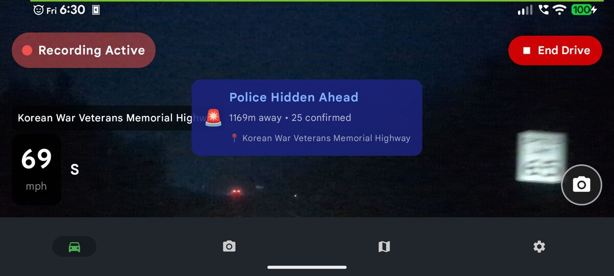
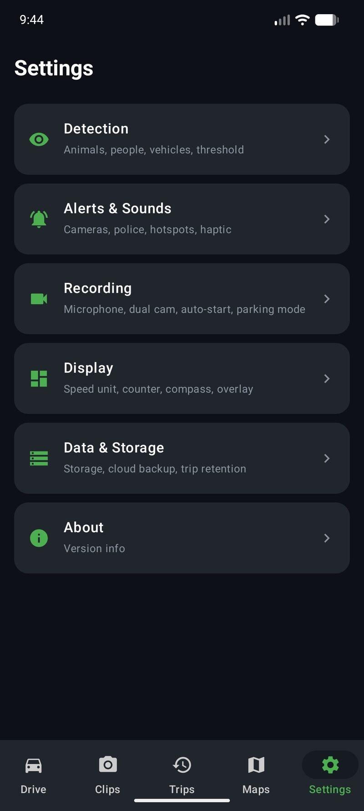

Best Dash Cam App for Android in 2026: Why Your Phone Beats a $300 Hardware Dashcam
Disclosure: Phone Dashcam is our app — this comparison reflects our honest assessment. Some links are Amazon affiliate links; as an Amazon Associate, we earn from qualifying purchases at no extra cost to you.
Methodology: We evaluated these apps by installing each on a Pixel 7a running Android 14 and using them as a primary dashcam over multiple weeks. Scoring criteria: recording reliability, loop recording behavior, crash detection accuracy, cloud backup options, camera alert coverage, and battery use during extended sessions.
Phone Dashcam is the top-rated free dash cam app for Android in 2026. It combines loop recording, crash detection, on-device AI animal and vehicle detection, 24/7 parking mode, and 336,000+ Flock Safety ALPR and speed camera alerts — all working offline on any Android 8.0+ phone. Free to download on Google Play. No account or sign-up required.
Here is a number that should make every hardware dashcam manufacturer nervous: the camera on a three-year-old Android phone shoots sharper 4K video than the sensor inside most $300 dedicated dashcams. And unlike a hardware unit that does exactly one thing, your phone runs software that gets smarter with every update.
In 2026, the best dash cam app for Android does not just record the road. It detects crashes and locks footage automatically. It guards your parked car with motion detection. It backs up important clips to the cloud without a subscription. It warns you about speed cameras, red light cameras, and police speed traps. And it costs nothing to get started.
This guide breaks down what makes a great dashcam app, how the leading Android dashcam apps compare against dedicated hardware, and why an increasing number of drivers are ditching the hardware entirely.

Phone Dashcam alerting the driver to a police speed trap ahead
What Makes the Best Dash Cam App for Android?
Not every dashcam app android users can download deserves a spot on your phone. The Play Store is full of simple screen recorders that slap a timestamp on your video and call it a dashcam. A genuinely useful dash cam app needs to do much more. Here is what separates a good dashcam app from a great one:
- Reliable loop recording — Continuous recording that automatically manages storage by overwriting the oldest footage. You should never have to manually delete files or worry about running out of space mid-drive.
- Parking mode with motion detection — Your car is vulnerable when you are not in it. A parking mode dashcam app needs to detect motion, save clips, and do it all with the screen off to conserve battery.
- Crash and impact detection — If your phone's accelerometer detects a sudden impact, the app should instantly lock that footage so it cannot be overwritten. This is the single most important feature for insurance claims.
- Cloud backup — If someone steals your phone or smashes it after an accident, the footage on the device is gone. A dashcam app with cloud backup ensures critical clips survive no matter what happens to the hardware.
- Camera and police alerts — Speed cameras, red light cameras, ALPR (Automated License Plate Reader) cameras, and police speed traps. A dashcam app with speed camera alerts and police alerts saves you money and keeps you aware of your surroundings.
- Fair pricing — The best free dashcam apps give you full core functionality without paywalling basic recording. Premium features should be a one-time purchase, not a monthly subscription that costs more than the hardware alternative over time.
Phone Dashcam: The Best Free Dash Cam App for Android in 2026
Phone Dashcam is a free dashcam app that turns any Android phone into a full-featured AI dashcam. It was built for drivers who want hardware-level dashcam protection without buying dedicated hardware and without paying monthly subscriptions. Here is everything it does.
Loop Recording That Just Works
Phone Dashcam records continuously in configurable segments. When your phone's storage fills up, the oldest unprotected clips are automatically deleted to make room for new footage. You never need to manage files manually. Important clips (crashes, motion events, manual saves) are marked as protected and kept until you explicitly delete them. Even a phone with 16GB of storage handles this without issues.
Parking Mode with Motion Detection
This is where a phone dashcam app truly outshines cheap hardware units. When you park and activate parking mode, Phone Dashcam turns the screen off, drops brightness to near zero, and watches for motion through the camera. If someone walks past your car, bumps it, or tries to break in, the app saves a video clip and can flash the phone's flashlight as a visible deterrent. It is an android dashcam with parking mode that runs silently in the background without draining your battery in minutes. For drivers who want a dedicated parking security camera that does not require a $50 hardwire kit, this is the feature that makes the difference.
Parking mode with motion detection guards your car while you are away
Crash and Impact Detection
Phone Dashcam uses your phone's accelerometer and gyroscope to detect sudden impacts. When a crash is detected, the app immediately locks the current recording segment so it cannot be overwritten by loop recording. This crash detection dashcam feature works automatically with no driver input required. In the moments after an accident, the last thing you want to worry about is whether your dashcam saved the footage. It did.
Google Drive Cloud Backup
Important clips are automatically uploaded to your Google Drive. No third-party servers, no monthly cloud subscription. The dashcam app with cloud backup feature means your footage survives even if the phone is destroyed, stolen, or damaged in the incident you are trying to document. If the phone is on WiFi (like when you park at home), clips sync in the background. If you have a SIM card in the phone, they upload in real time over cellular data.
336,000+ Camera and Police Alerts
This is the feature that no hardware dashcam offers at any price. Phone Dashcam Pro includes a database of over 336,000 camera locations across the United States and beyond. This dashcam app with police alerts covers:
- Speed cameras — Fixed and mobile speed enforcement locations
- Red light cameras — Intersections with automated red light enforcement
- Flock Safety ALPR cameras — Automated License Plate Reader cameras used by law enforcement agencies
- Police speed traps — Community-reported and historically verified enforcement locations
Alerts appear on screen and trigger an audio warning as you approach. The camera map shows every known camera in your area, so you can plan routes with full awareness of enforcement infrastructure. A dashcam app with speed camera alerts like this pays for itself the first time it saves you from a ticket.

Map view showing police reports and camera locations in your area
AI Object Detection (YOLOv8)
Phone Dashcam Pro includes real-time AI object detection powered by YOLOv8, running entirely on-device with TensorFlow Lite. The AI dashcam app identifies vehicles, pedestrians, cyclists, and other objects on the road and draws bounding boxes on the live preview. This is the same class of computer vision technology used in advanced driver assistance systems, running locally on your phone with zero cloud dependency and zero latency. No other free dashcam app offers on-device AI detection.

Real-time AI object detection identifying vehicles on the road
GPS Speedometer and Speed Tracking
A live GPS speedometer displays your current speed on the recording screen. Speed data is embedded in your trip history, so you can review your maximum speed, average speed, and speed at any point along your route after the fact. This is useful both for personal driving analysis and for documenting that you were driving at a safe speed in the event of an incident.
Trip History with Route Maps
Every drive is logged with a detailed route map, distance traveled, duration, start and stop locations, and speed statistics. Trip history gives you a complete record of every journey, which can be valuable for mileage tracking, expense reports, or simply reviewing where you have been. Route maps display your path with color-coded speed indicators.
Dual Camera Recording
Phone Dashcam can record from both the front and rear cameras simultaneously. Mount the phone on your windshield and the rear camera captures the road ahead while the front-facing camera records the cabin interior. It's the go-to mobile app for delivery drivers and rideshare operators who need documentation of both the road and the cabin — and one of the best mobile safety apps for anyone who drives professionally. Taxi operators, Uber drivers, and delivery couriers all benefit from having both angles on record.
Remote Viewer: Live Stream from Anywhere
With the remote viewer feature, you can watch your dashcam's live feed from anywhere in the world using a web browser. The connection uses WebRTC for peer-to-peer video streaming over the internet, so there is no relay server and no monthly fee. Open the link on your daily phone's browser and see exactly what your dashcam phone sees in real time. Check on your parked car from your desk, or monitor a road trip from home.
Phone Dashcam vs Hardware Dashcam: An Honest Comparison
The question every driver considering a dash cam app asks: is a dashcam app as good as a hardware dashcam? The honest answer is that a phone dashcam wins in most categories, but hardware has a few genuine advantages. Here is the full breakdown.
| Feature | Phone Dashcam App | $200-$400 Hardware Dashcam |
|---|---|---|
| Upfront Cost | $0 (use any spare phone) | $200-$400 |
| Video Quality | 1080p-4K (depends on phone) | 1080p-4K |
| Parking Mode | Free, built-in | Requires $30-50 hardwire kit |
| Crash Detection | Yes, auto-locks clip | Yes |
| Cloud Backup | Free via Google Drive | $5-$15/month subscription |
| Camera/Police Alerts | 336,000+ cameras | Not available |
| AI Object Detection | YOLOv8 on-device | Basic or none |
| Remote Live View | WebRTC, free | $10-15/month subscription |
| Dual Camera | Front + rear built-in | Requires second $100+ camera |
| GPS Speedometer | Built-in GPS | Most models include GPS |
| Software Updates | Regular updates via Play Store | Rare firmware updates |
| Monthly Fees | $0 forever | $0-$15/month for cloud features |
| Heat Tolerance | Moderate (phone limits apply) | Built for extreme temps |
| Form Factor | Larger, requires mount | Compact, discreet |
| Night Vision (IR) | No IR sensor | Some models include IR |
The verdict: if you want the most features for the least money, a phone dashcam vs hardware dashcam comparison favors the phone overwhelmingly. Hardware dashcams earn their price in two specific scenarios: extreme-heat climates where phones may throttle, and drivers who want the smallest possible form factor behind the rearview mirror. For everyone else, a dash cam app on an Android phone delivers more capability at a fraction of the cost.
Best Phones to Use as a Dedicated Dashcam
If you are wondering how to use your phone as a dashcam without sacrificing your daily driver, the best approach is to use a spare or old phone as a dedicated dashcam that stays in the car. Any Android phone running Android 8.0 (Oreo) or newer works. Here are the best options:
Best Budget Picks for a Dedicated Dashcam Phone
- Google Pixel 3a / 4a / 5a (great cameras)
- Samsung Galaxy A50 / A51 / A52
- Samsung Galaxy S8 / S9 / S10
- OnePlus 6 / 6T / 7
- Motorola Moto G7 / G8 / G Power
- Xiaomi Redmi Note 8 / 9 / 10
- Nokia 6.1 / 7.1 / 7.2
- LG G7 / G8 / V40
- Google Pixel 2 / 2 XL
- Any budget phone from 2018 or later
You can often find these phones for $30-80 on eBay, Facebook Marketplace, or Swappa. Some people have them sitting in a drawer already. Phones with at least 3GB of RAM and Android 10 or newer give the best experience, but even 2GB RAM phones with Android 8.0 handle basic recording and parking mode without issues.
For a more detailed walkthrough, see our complete guide: How to Turn an Old Android Phone Into a Dashcam.
How to Set Up Your Phone as a Dashcam
Getting started with a dash cam app takes about 60 seconds. Here is the setup process:
Install Phone Dashcam
Download Phone Dashcam from Google Play on your phone. It is free, requires no account, and has no sign-up process. Open the app and grant camera, microphone, and location permissions when prompted.
Mount and Plug In
Attach a windshield suction mount or dashboard holder (any $5-15 mount works) and clip your phone in with the rear camera facing the road. Connect a USB car charger so the phone stays powered during long drives. If you are using a spare phone, leave it in the car permanently.
Tap Start Drive
Hit the Start Drive button and you are recording. Loop recording, crash detection, and GPS tracking are all active immediately. When you park, switch to parking mode for motion-activated surveillance with the screen off. That is the entire setup.
Optional: enable auto-start on charger in Settings, and Phone Dashcam will begin recording automatically every time you start your car. No need to touch the phone at all.
Best Phone Mounts for Dashcam Use
From $12.99
Extensive settings let you customize every aspect of recording and alerts
Free vs Pro: What Do You Get?
Phone Dashcam is a genuinely free dashcam app. The free version is not a crippled trial. It includes everything most drivers need for daily dashcam use. The Pro upgrade unlocks advanced features for power users who want the full package.
Free
- Continuous loop recording
- Parking mode with motion detection
- Crash and impact detection
- GPS speedometer
- Trip history with route maps
- Google Drive cloud backup
- Dual camera recording
- Auto-start on charger
- Manual clip saving
Pro
- Everything in Free
- AI object detection (YOLOv8)
- 336,000+ camera alerts
- Police speed trap alerts
- Flock Safety ALPR alerts
- Remote live viewer (WebRTC)
- Ad-free experience
- All future Pro features included
Compare that to hardware dashcam pricing: a Viofo A139 Pro runs $250-350 for the camera alone, plus $30-50 for a hardwire parking kit, plus $10-15 per month if you want cloud storage and remote viewing. Over two years, a hardware dashcam with cloud features costs $500 or more. Phone Dashcam Pro costs $9.99 once and the cloud backup is free through your existing Google Drive.
Frequently Asked Questions
Is a dash cam app as good as a hardware dashcam?
For most drivers, yes. Modern Android phones have camera sensors that match or exceed dedicated dashcam hardware in video quality. A dash cam app like Phone Dashcam adds features that hardware cannot offer: AI detection, 336,000+ camera alerts, free cloud backup, and remote streaming. Hardware dashcams have the advantage in extreme heat endurance and compact form factor, but a phone wins on features, flexibility, and total cost of ownership.
What is the best free dash cam app for Android in 2026?
Phone Dashcam offers the most complete free tier of any dashcam app android users can download today. The free version includes continuous loop recording, parking mode with motion detection, crash and impact detection, a GPS speedometer, trip history with route maps, Google Drive cloud backup, and dual camera support. No account required, no monthly fees, and no artificial limitations on recording time or video quality.
Can I use my phone as a dashcam with parking mode?
Yes. Phone Dashcam includes a full parking mode that works with the screen turned off. The app uses motion detection through the camera to watch for activity around your vehicle. When motion is detected, it automatically saves a video clip and can flash the phone flashlight as a deterrent. For a dedicated setup, use a spare phone that stays in the car connected to a charger. See our complete guide to turning an old phone into a dashcam.
Does a dashcam app drain my phone battery?
While driving, your phone should always be plugged into a car charger, so battery drain during active recording is not a concern. In parking mode, Phone Dashcam minimizes power consumption by turning off the screen and only recording when motion is detected. A phone with decent battery health runs parking mode for several hours on a single charge. For extended parking surveillance, a USB power bank keeps the phone running indefinitely.
Do dashcam apps work without internet?
Absolutely. Phone Dashcam works fully offline for recording, crash detection, parking mode, GPS speedometer, and trip logging. Internet connectivity is only required for optional features like Google Drive cloud backup and the remote live viewer. Cloud backup syncs automatically whenever the phone connects to WiFi, so a cellular data plan is not necessary.
What are the best Uber dashcam alternatives to a hardware dashcam?
Phone Dashcam is the top Uber dashcam alternative for drivers who don't want to install hardware. It records front and rear cameras simultaneously, logs every trip with GPS routes, and backs up footage to Google Drive automatically. Unlike a dedicated dashcam, it also shows camera and police alerts — which hardware units in this price range don't offer.
Ready to upgrade your dashcam?
Phone Dashcam is free to download with no account needed. Full recording, parking mode, crash detection, cloud backup, and more. Install it now and your phone is a dashcam in 60 seconds.
Download Phone Dashcam Free